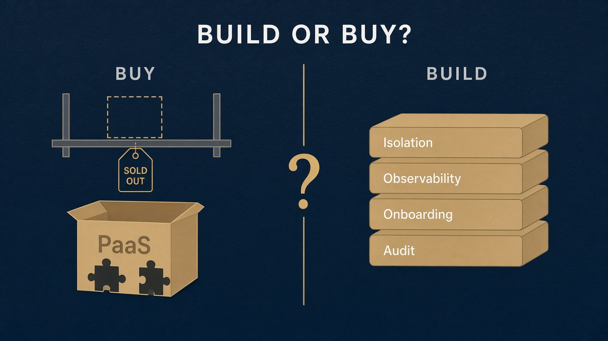

When should a company build a multi-tenant platform rather than buy one?
This is actually a trick question since, as far as I know, there is currently no off-the-shelf fully functional multi-tenant platform you can buy. I will still go through related options and what you can do instead of building your own multi-tenant platform from scratch.
The closest you can buy is a Platform-as-a-Service solution, such as AWS Elastic Beanstalk, AWS Amplify or Heroku. Then you can create one platform per tenant per environment. It would not be a true multi-tenant platform, more like entirely segregated tenants sharing the same infrastructure-as-code codebase. Please note that this multiplies quickly: every tenant and every environment is a separate platform to operate.
Such solutions are very unlikely to produce the results you seek nor pass an audit on their own. I did some research and could not find a single product that would offer:
- comprehensive observability and alerting
- tenant (or app) onboarding
- promotion mechanism to promote an app to higher environments
- egress solution
- secure build pipeline with vulnerability scanning and SBOM management
So even if you decide to use an off-the-shelf PaaS, you still have a lot of work in front of you to implement all the features of a multi-tenant platform and make it compliant with whatever regulations apply to your business. It is not an impossible task, but you would need to think carefully about what your requirements are and consider these off-the-shelf PaaS solutions as a component of your overall platform.
I am working on a multi-tenant platform suitable for large, regulated businesses: eurus-aws. Although it is only half finished at the time I am writing this article, you are free to re-use its existing components or follow the trade-offs I explained in the Mini-ADR. This entire codebase in open-source.
I suspect this article did not fully answer the questions you had, but hopefully I gave you some insights. And please remember: platform engineering is hard, and a PaaS on its own will not make it easy.